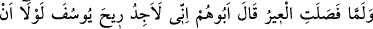
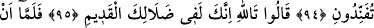
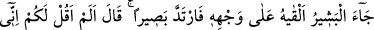
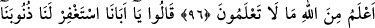
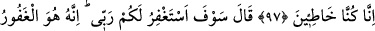
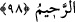

YÛSUF’UN KOKUSUNU
DUYUYORUM
94. Kervan (Mısır’dan) ayrıldığında babaları: “Eğer bana bunak demezseniz, ben
Yûsuf’un kokusunu duyuyorum.” dedi.
95. “Vallahi sen, hâlâ eski şaşkınlığın içindesin!” dediler.
96. Müjdeci gelip de gömleği yüzüne koyunca derhal görür oldu: “Ben size,
Allah’tan sizin bilmediğiniz şeyleri birilim demedim mi?’ dedi.
97. (Oğulları): “Ey babamız! bizim günahlarımızın bağışlanmasını dile.
Gerçekten biz günah işledik.” dediler.
98. (Yâkub:) “Sizin için Rabbimden af dileyeceğim. Şüphesiz O, bağışlayandır,
esirgeyendir.” dedi.
“Kervan” Mısır’dan “ayrıldığında” Yani şehrin duvarlarını ve yerleşim bölgelerini
geçip şehirden ayrıldığı zaman… Kâşifî der ki: “Yani uzaklaşıp Mısır şehrinden çıkıp
sahraya ulaştığı zaman”
“babaları” Yâkub yanındaki torunlarına ve başkalarına: “eğer bana bunak
demezseniz,” Yani beni bunaklığa nisbet etmezseniz.
“
(bunaklık)”, yaşlılıktan dolayı bunama, aklın azalması ve görüşün bozulması
demektir.
Ayetteki “Eğer bana bunak demezseniz” şartının cevabı hazf edilmiştir. Takdîri
“elbette beni tasdîk ederdiniz.” şeklindedir.
Bunama, ne peygamberlerde ne de onların vârislerinde görülür. Çünkü o,
noksanlıklardan olan bir tür deliliktir. Oysa onlar, kendilerini alçaltıp kötü gösterecek
âfetlerden uzaktırlar.
“Ben Yûsuf ’un kokusunu duyuyorum’ dedi.” Allah Yûsuf’un kokusunu kendisine
duyurdu. Yani Allah Teâlâ Yâkub’u Yahuda’nın gömlekle beraber kendisine yöneldiği